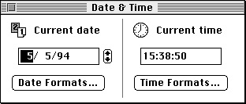
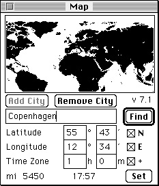
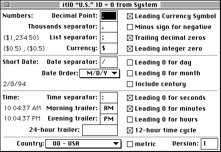

About the Date, Time, and Measurement Utilities
You can use the Date, Time, and Measurement Utilities to manipulate the date-time information and geographic location data used by a Macintosh computer. A Macintosh computer contains a battery-operated clock chip that maintainsThe date-time information is stored in a 4-byte value located on the clock chip.The geographic location and related time-zone information is stored in extended parameter RAM. For information on extended parameter RAM, see the chapter "Parameter RAM Utilities" in this book.
- the current date-time information
- the geographic location and related time-zone information
You can use the routines provided by the Date, Time, and Measurement Utilities to manipulate this information. Specifically, the Date, Time, and Measurement Utilities provide routines that you can use to
The following sections give an overview of these utilities.
- get the current date and time
- set the current date and time, if necessary
- convert between internal date-time structures
- get and set the geographic location and time-zone information
- determine the current measurement system
- determine the number of elapsed microseconds since system startup
Date and Time
A Macintosh computer contains a battery-operated clock chip that maintains the current date-time information. This date-time information is expressed, using 4 bytes, as the number of seconds elapsed since midnight, January 1, 1904. At system startup the date-time information is copied into low memory and is accessible through the system global variableTime. System software updates the value of the global variableTimeeach second. Doing this is faster than manipulating the clock chip directly.The Date, Time, and Measurement Utilities provide four data structures that you can use to access date-time information. You can access date-time information through
To access date-time information as a date and time, you can use a date-time record or a long date-time record. A date-time record is defined by a data structure of type
- a standard date-time value that consists of a 32-bit long integer indicating the total number of seconds elapsed since midnight, January 1, 1904
- a date-time record that contains fields to indicate the year, month, day, hour, minute, second, and day of the week
- a long date-time record that extends the date-time record format by adding fields for era, day of the year, week of the year, and morning/evening designations (for example, A.M. and P.M.)
- a long date-time value that consists of a 64-bit integer, in SANE
comp(computational) format, which also maintains the total number of seconds relative to midnight on January 1, 1904DateTimeRecTYPE DateTimeRec = RECORD year: Integer; {year, ranging from 1904 to 2040} month: Integer; {month, 1 = January and 12 = December} day: Integer; {day, from 1 to 31} hour: Integer; {hour, from 0 to 23} minute: Integer; {minute, from 0 to 59} second: Integer; {second, from 0 to 59} dayOfWeek: Integer; {day of the week, 1 = Sunday, } { 7 = Saturday} END;Theyearfield contains the year of the date, ranging from 1904 to 2040. Themonthfield contains the month of the year, where a value of 1 equals January and 12 equals December. Thedayfield contains the number of the day, ranging from day 1 to day 31. Thehourfield contains the hour, where the value of 0 equals midnight and 23 equals 11 P.M. Theminutefield contains the number of minutes, ranging from 0 to 59 minutes. Thesecondfield contains the number of seconds, ranging from 0 to 59 seconds. ThedayOfWeekfield specifies the name of the day; a value of 1 equals Sunday and a value of 7 equals Saturday. For additional information about the fields in a date-time record, see "The Date-Time Record" beginning on page 4-23.Because the values in a date-time record are simply a translation of the long integer containing the number of seconds since midnight, January 1, 1904, the data structure suffers the same limitation as the long integer representation: after the long integer has reached its maximum value of $FFFFFFFF, it resets to 0. Therefore, the date-time record can track dates and times only between midnight on January 1, 1904 and 6:28:15 A.M. on February 6, 2040.
- Note
- The date-time record can be used to hold date and time values only for a Gregorian calendar. The long date-time record, described next, can be used for a Gregorian calendar as well as other calendar systems.
For some applications, this range might be inadequate. For example, a hotel management application might need to let managers book reservations for customers who think ahead to 2050, or a history multimedia application might need to track dates in the first century B.C. If your application needs to track dates and times beyond the range supported by the date-time record, you must use a long date-time record. A long date-time record is defined by a data structure of type
LongDateRecTYPE LongDateRec = RECORD CASE Integer OF 0: (era: Integer; {era} year: Integer; {year, from 30081 B.C. to 29940 A.D} month: Integer; {month, 1 = January and } { 12 = December} day: Integer; {day, from 1 to 31} hour: Integer; {hour, from 0 to 23} minute: Integer; {minute, from 0 to 59} second: Integer; {second, from 0 to 59} dayOfWeek: Integer; {day of the week, 1= Sunday, } { 7 = Saturday} dayOfYear: Integer; {day of the year, 1 to 365} weekOfYear: Integer; {week of the year, 1 to 52} pm: Integer; {which half of day--0 for } { morning, 1 for evening} res1: Integer; {reserved} res2: Integer; {reserved} res3: Integer); {reserved} 1: {index by LongDateField} (list: ARRAY [0..13] OF Integer); 2: (eraAlt: Integer; {era} {date-time record} oldDate: DateTimeRec); END;You can use a long date-time record for three purposes: to access a date and time, to specify which of the fields in a long date-time record to verify, and to convert a date and time represented by a date-time record into a date and time represented by a long date-time record.A long date time-record includes all of the fields available in a date-time record in addition to fields that describe the era, day of the year, week of the year, and morning /evening designations (for example, A.M. and P.M.). The
- IMPORTANT
- The long date-time record covers a much longer time span (30,000 B.C. to 30,000 A.D.) than the date-time record. In addition, the long date-time record allows conversions to different calendar systems, such as a lunar calendar.

erafield contains the era: a value of 0 represents A.D., and -1 represents B.C. ThedayOfYearfield contains a number that represents a day of a year. For example, the value 300 equals the 300th day of a year. TheweekOfYearfield contains a week number. Thepmfield contains the morning or evening half of the 24-hour day cycle, where a value of 0 represents the morning (for example, A.M.) and 1 represents the evening (for example, P.M.).The
listfield contains an array of values that indicate which of the fields in a long date-time record need to be verified.The
eraAltfield, which indicates the era, and theoldDatefield, which contains a date-time record, are used only for conversion from a date-time record to a long date-time record. For additional information about the fields in the long date-time record, see "The Long Date-Time Record" beginning on page 4-26.Note that if you specify, in either record, a value in the
month,day,hour,minute, orsecondfield that exceeds the maximum value allowed for that field (for example, a value larger than 23 for thehourfield), the result is a wraparound to a future date and time when you modify the date-time format. Suppose you set theyearfield in a date-time record to a value greater than 2040, for example 2045. When you modify the date-time format, you get a value of 1909, because the value 2045 caused a wraparound to 1904 plus 5, the number of years over 2040. See "Calculating Dates" beginning on page 4-14 to see how you can use a wraparound to calculate and retrieve information about a specific date.A user can set the current date-time information by using the General Controls control panel, the Date & Time control panel, or the Alarm Clock. After the user sets the new date and time, this new date and time is written to the clock chip, and the global variable
- Note
- To present a date and time value as a date and time text string, you need to use the Text Utilities routines. For a complete description of these routines, see Inside Macintosh: Text.
Timeis updated to reflect the new date and time. Figure 4-1 illustrates how a user might change the date, using the Date & Time control panel.Figure 4-1 The Date & Time control panel

Geographic Location and Time Zone
Geographic location and related time-zone information are stored in the Macintosh parameter RAM (extended parameter RAM). System software provides routines that allow you to read this information and, if necessary, make changes to it and then store the new settings in the parameter RAM (extended parameter RAM).You can read and store values for
The Map control panel allows the user to get geographic location and time-zone information. Figure 4-2 shows the Map control panel.
- latitude
- longitude
- daylight saving time (DST)
- Greenwich mean time (GMT)
Figure 4-2 The Map control panel

The Map control panel specifies latitude and longitude, computation of Greenwich mean time for international time specification (shown as the Time Zone information), and computation of the distance and time difference between the current location (in this case, the location of the user's computer is Cupertino, California) and an arbitrary city (in this case, Copenhagen, Denmark).
See "Handling Geographic Location and Time-Zone Data" beginning on page 4-18, to see how you can use Date, Time, and Measurement Utilities routines to work with the geographic location and time-zone information.
System of Measurement
The Date, Time, and Measurement Utilities provide a routine (theIsMetricfunction) that you can use to determine the type of measurement used by the current script system. The system software supports two types of measurement systems:The measurement information is stored in the numeric-format resource (resource type
- the International System of Units (also called the metric system)--for example centimeters, kilometers, milligrams, degrees Celsius, and so on.
- the English system of measurement (also called the British or British imperial system)--for example, inches, miles, ounces, degrees Fahrenheit, and so on.
'itl0') of a script system. TheIsMetricfunction determines whether the current script system uses the International System of Units or the English system of measurement by examining the 'itl0' resource. Figure 4-3 depicts the window ResEdit displays for a numeric-format resource. Note that in the bottom of the figure the metric box is unchecked, indicating that the script system associated with this 'itl0' resource uses the English system of measurement.Figure 4-3 The numeric-format resource (resource type 'it10')

Time Measurement
The Date, Time, and Measurement Utilities provide a routine (theMicrosecondsprocedure) that you can use to measure the number of microseconds that have elapsed since system startup. TheMicrosecondsprocedure is not effected by any user-specified changes to the date and time information, that is, a user can modify the current date-time information without effecting the value returned by theMicrosecondsprocedure.The number of microseconds elapsed is returned in a 64-bit unsigned integer, specified by the unsigned wide record. An unsigned wide record is defined by a data structure of type
UnsignedWide.TYPE UnsignedWide = PACKED RECORD hi: LongInt; {high-order 32 bits} lo: LongInt; {low-order 32 bits} END;